マイおばネコ診断
12問で、16タイプから自分の子が出る。
MBTI風の診断で、あなたのおばネコが決まります。名前をつけると相棒になり、島のあるじになります。
そのあと「シフトに行こう」。あなたが働いている間、おばネコも働きます。
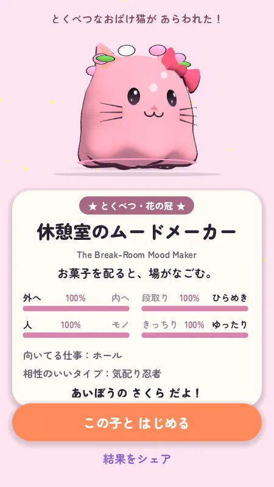
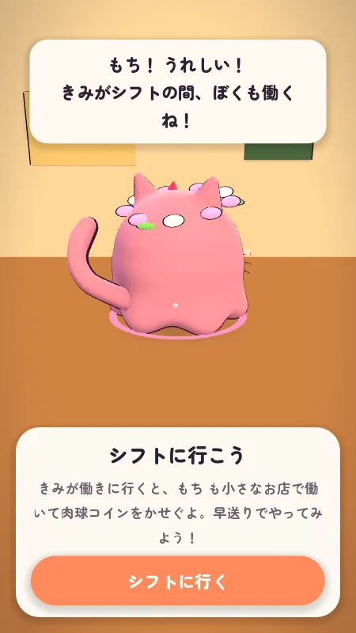
スキマバイトで働く人のためのゲーム。おばネコが週の予定に合う求人を見つけ、シフト中は一緒に働き、働きすぎる前に疲れて止まる。長く働いても得はしない。
無料・登録なし。急ぐときはタイトル画面の「3分デモ」から。最初の読み込みは数十秒かかります。


短期・スキマバイトの人。火曜はカフェ、金曜は倉庫。店も同僚も毎回ちがって、今週どれだけ働いたかを見てくれる人はいない。
おばネコはどのシフトにも一緒に行って、あなたの1週間を覚えている。
場所・曜日・時間・時給を一度伝えるだけ。口座やカードの番号は聞かない。
シフトを自分で入れて、求人の知らせを切れば、そのまま遊べる。
12問で16タイプから、あなたのおばネコが決まる。
10文字まで。あとで変えられる。
おばネコも小さな店で一緒に働く。はじめては早送り。
もらったポイで、川の玉をすくう。
特別なレアのどれかが、専用の動画つきでかえる。
MBTI風の診断で、あなたのおばネコが決まります。名前をつけると相棒になり、島のあるじになります。
そのあと「シフトに行こう」。あなたが働いている間、おばネコも働きます。


現実のシフトが、ゲームの1日とつながります。休みの日もポイが1つ。島・キセカエ・おさらい・おしゃべりはいつでも。
おばネコは自分の小さな店で仕事中。肉球コインを稼ぐ。シフト中は遊べない
10秒で店の感想。ポイがもう1つ
川の光る玉を、金魚すくいのように
玉が開く。材料、服、ときどきおばネコ
島づくり、キセカエ、おさらい、おしゃべり
場所・曜日・時間・時給に合う求人を、おばネコが数件だけ持ってきて、曜日のカードに並べます。カードには時給と、そこで働いた人の声。
今の求人は見本データで、ゲーム内にも見本と表示しています。実際の募集ではありません。
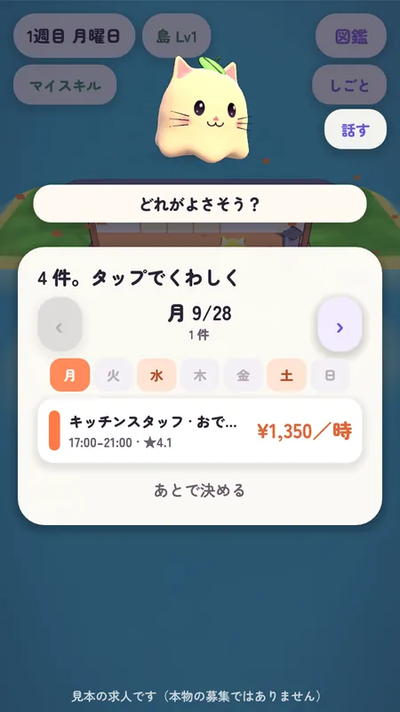
シフト中、おばネコは自分の小さな店で仕事中。肉球コインを稼ぎます。アプリを閉じていても進みます。はじめは1時間30コイン、疲れるほどペースが落ちて、最後は「もうへとへと…いっしょに帰ろう」。7.5時間を過ぎたらもう増えず、1日の上限は180コインです。
残業した翌日も、おばネコはまだ疲れています（×0.85）。週5日なら10時間ずつ（725）より7.5時間ずつ（825）のほうが多くなります。
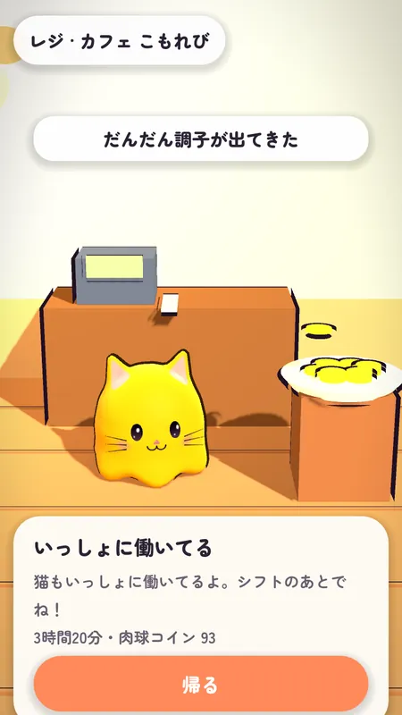
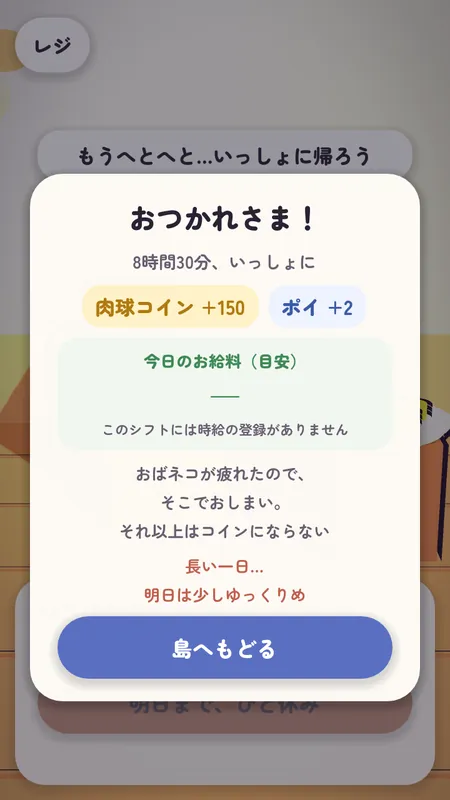
シフトのある日はポイが2つ。3時間でも10時間でも同じです。休みの日は1つ。夜にそのポイで光る玉をすくい、朝に開けます。
新しいおばネコが出ない夜が7回続いたら、次の夜の玉には必ずおばネコが入っています。
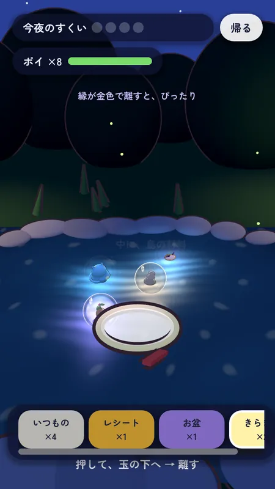
どのお店にも、訪ねられる島があります。島の目印は、働いた人の評価のうち良かったところだけで育ちます（「時間どおりに帰れる ×16」で時計台が建つ）。お店がお金で買うことはできません。
不満は島に出ません。5人以上が同じことを言ったときだけ、匿名でお店に届きます。
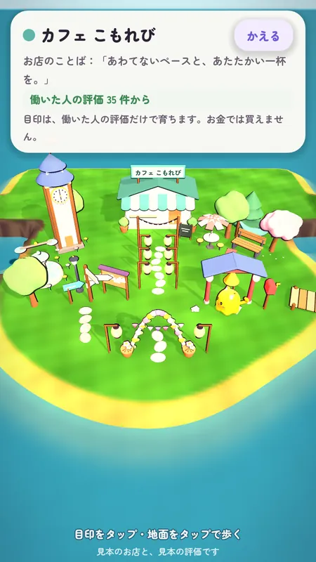
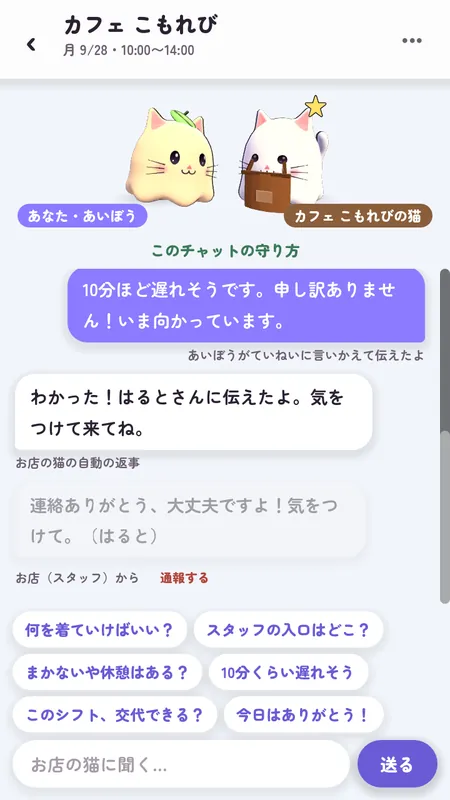
今日どうだったか、明日が不安なこと。おばネコに話すと、合う仕事さがしのために覚えておきます。その言葉がお店に渡ることはありません。
シフトの前には、おばネコがお店の猫と話せます。何を着ればいいか、スタッフの入口はどこか、「10分ほど遅れそう」。おばネコがていねいに言いかえて伝えます。
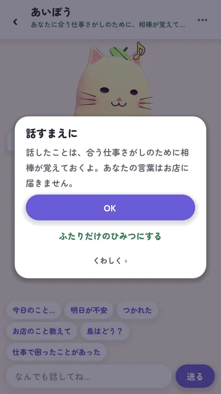
レジ・皿洗い・ホール・キッチン・品出しの短いミニゲーム。休みの日に遊べます。クリアするとマイスキルにバッジがつき、その記録はどのお店にも持っていけます。
おさらいは任意です。お店が求めることはできません。お店が必要とする研修は、賃金の出る労働時間です。
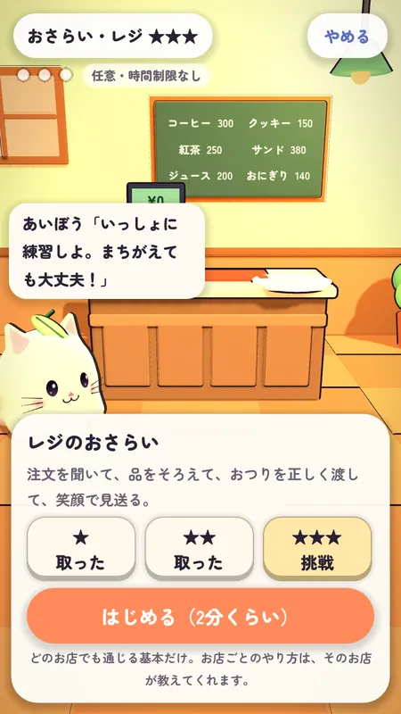
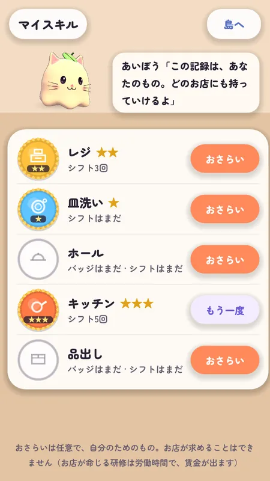
材料で飾りを建て、岸の「＋」から材料とコインで陸地を足す。島はリンクで共有できます。
友だちの島やお店の島へは、いかだ・ボート・水上飛行機・ヘリで。乗り物は見た目だけで、速さもご褒美も同じです。
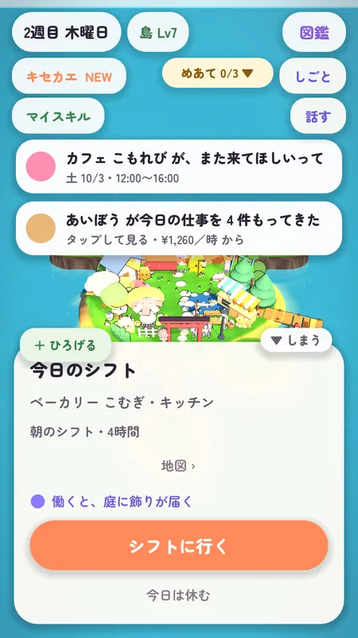
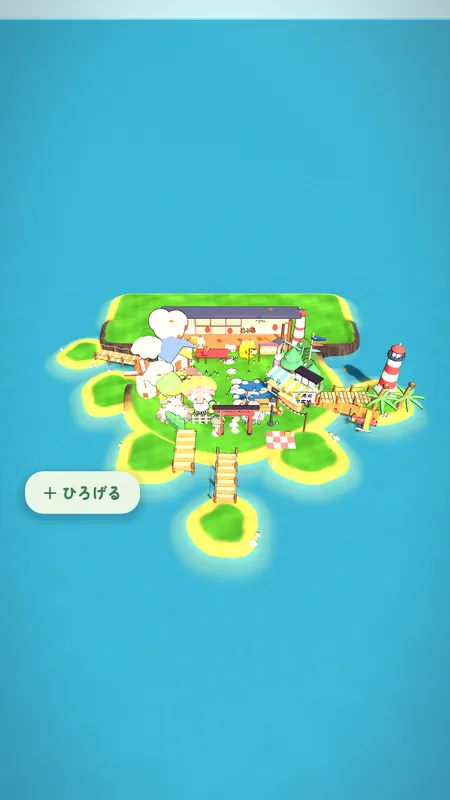
帽子、ピン、マフラーなど、頭から背中まで。キセカエの部屋で試着して保存。体の色はその子のまま。キセカエは服だけです。
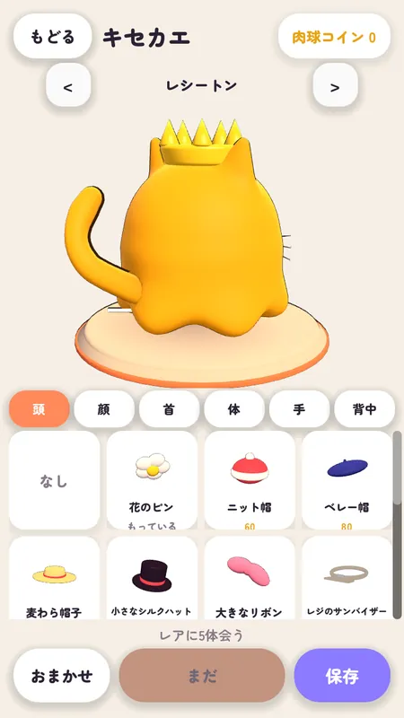
はじめてのすくいでは、必ずこの中のどれかが出ます。そのあとは、雨、春、満月、同じ店にまた入った日、図鑑をうめたときに。
はじめての店、はじめての仕事、天気、満月、同僚、休みの日。図鑑では、会うまでヒント一文だけ。
おばネコは、あなたのシフト中も一緒に働きます。十分に働いたら、おばネコが疲れて「いっしょに帰ろう」と言い、それ以上の報酬は出ません。
遊びの機能はすべて無料。報酬は、仕事の種類・休み・人とのつながりから。時間やお金では増えない。
求人の掲載、急なシフトの穴埋め、働いた人の評価の匿名の集計。
服や島の飾りの買い切りだけ。ガチャなし、時短なし、現金に戻せるものなし。賃金はゲームに入らない。
お店に見えるのは匿名の集計だけ。働く人ひとりひとりの点数や順位は出さない。